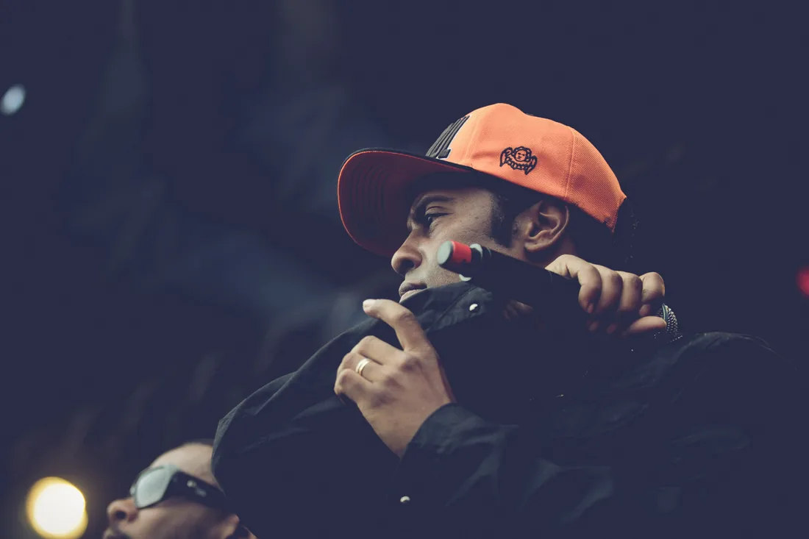
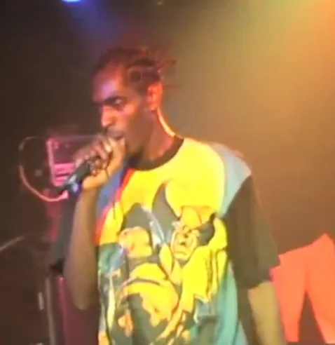
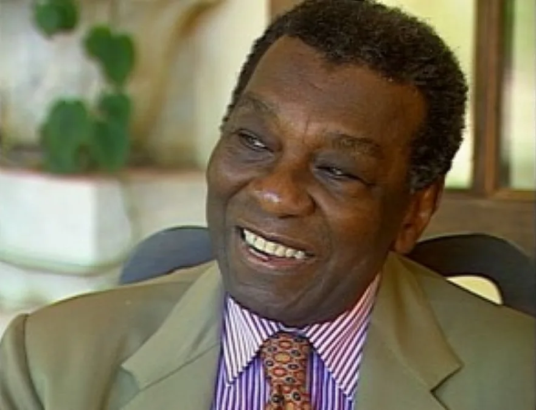
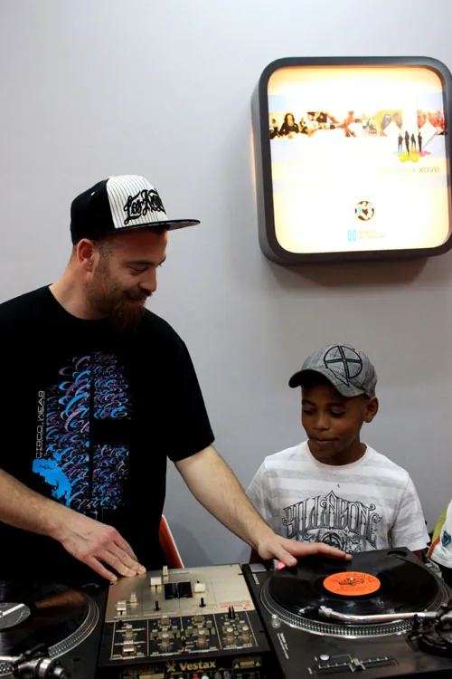
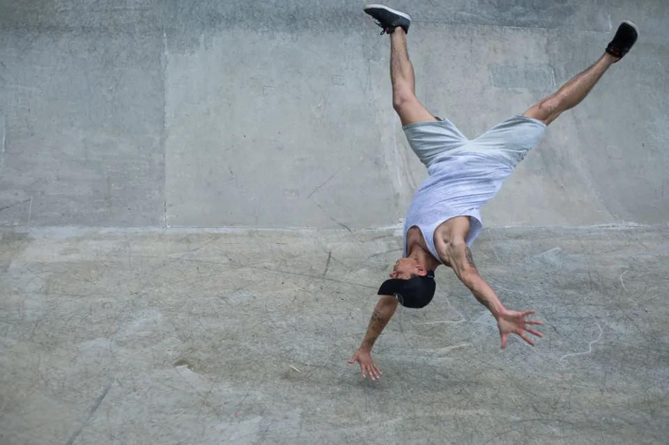
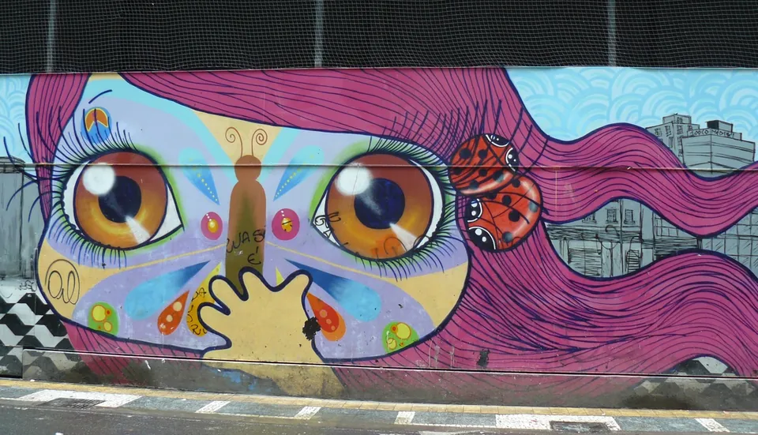
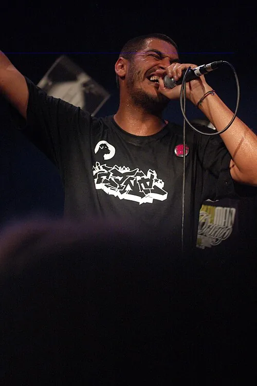
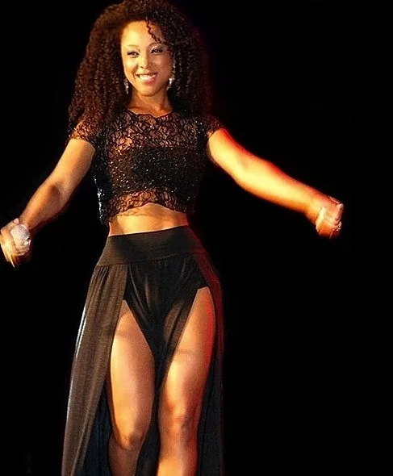
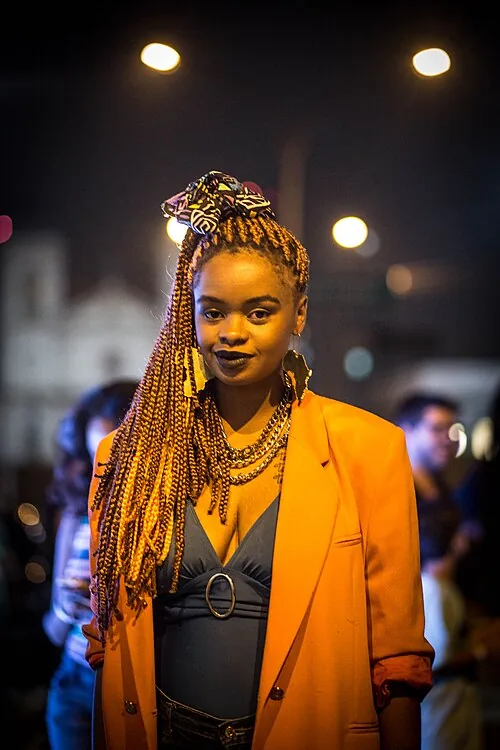
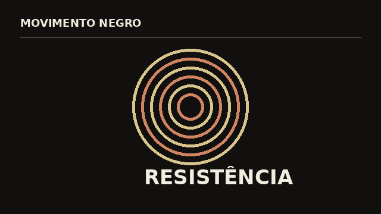
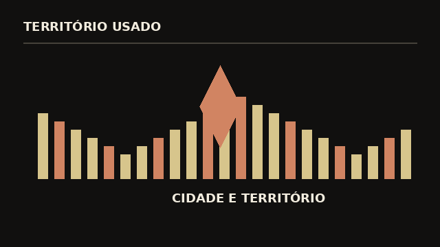
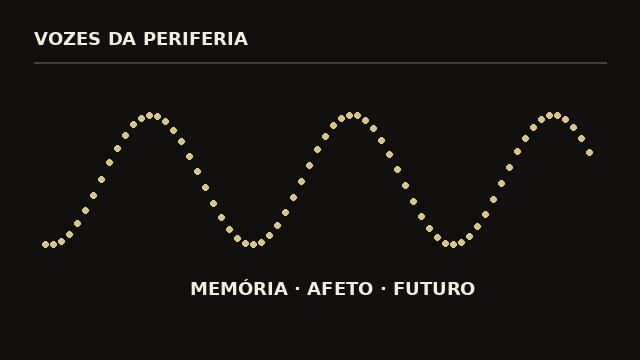
UMA INSTALAÇÃO SOBRE
VOZES DA
QUEBRADA
O rap como memória, resistênciae transformação social.
TERRITÓRIO
É ESPAÇO VIVIDO.
É ESPAÇO VIVIDO.
A PERIFERIA
TAMBÉM PRODUZ
CONHECIMENTO.
TAMBÉM PRODUZ
CONHECIMENTO.
01 DIREITO À CIDADE
02 GLOBALIZAÇÃO / DESIGUALDADE
RACIONAIS MC’S✳SABOTAGE✳EMICIDA✳CRIOLO
MULHERES QUE FAZEM HISTÓRIA
ARQUIVO VIVO · MEMÓRIA DAS PERIFERIAS BRASILEIRAS
SHARYLAINEARQUIVO A INSERIR
DINA DIARQUIVO A INSERIR
DRIK BARBOSAARQUIVO A INSERIR